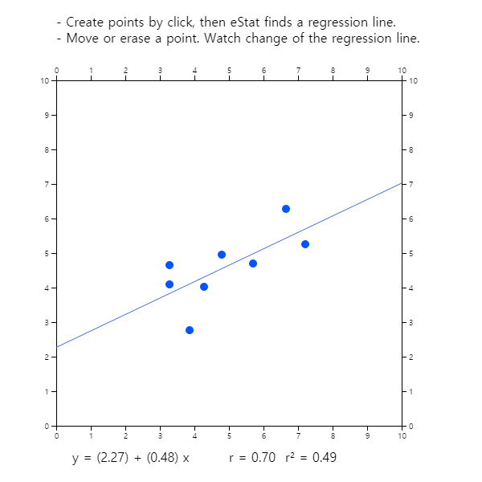

Chapter 12. Correlation and Regression Analysis
12.2 Simple Linear Regression Analysis
[presentation] [video]
Regression analysis is a statistical method that first establishes a reasonable mathematical model of relationships between variables, estimates the model using measured values of the variables, and then uses the estimated model to describe the relationship between the variables, or to apply it to the analysis such as forecasting.
If the number of independent variables included in the regression equation is one, it is called a simple linear regression. If the number of independent variables are two or more, it is called a multiple linear regression.
12.2.1 Simple Linear Regression Model
In order to estimate the regression coefficients \(\alpha\) and \(\beta\), observations of the dependent and independent variable are required, i.e., samples. In general, all of these observations are not located in a line. This is because, even if the \(Y\) and \(X\) have an exact linear relation, there may be a measurement error in the observations, or there may not be an exact linear relationship between \(Y\) and \(X\). Therefore, the regression formula can be written by considering these errors together as follows: $$ Y_i = \alpha + \beta X_i + \epsilon_{i}, \quad i=1,2,...,n $$ where \(i\) is the subscript representing the \(i^{th}\) observation, and \(\epsilon_i\) is the random variable indicating an error with a mean of zero and a variance \(\sigma^2\) which is independent of each other. The error \(\epsilon_i\) indicates that the observation \(Y_i\) is how far away from the population regression equation. The above equation includes unknown population parameters \(\alpha\), \(\beta\) and \(\sigma^2\), and is therefore, referred to as a population regression model.
If \(a\) and \(b\) are the estimated regression coefficients using samples, the fitted regression equation can be written as follows: It is referred to as the sample regression equation. $$ {\hat Y}_i = a + b X_i $$ In this expression, \({\hat Y}_i\) represents the estimated value of \(Y\) at \(X=X_i\) as predicted by the appropriate regression equation. These predicted values can not match the actual observed values of \(Y\), and differences between these two values are called residuals and denoted as \(e_i\). $$ \text{Residuals} \qquad e_i = Y_i - {\hat Y}_i , \quad i=1,2,...,n $$ The regression analysis makes some assumptions about the unobservable error \(\epsilon_i\). Since the residuals \(e_i\) calculated using the sample values have similar characteristics as \(\epsilon_i\), they are used to investigate the validity of these assumptions. (Refer to Section 12.2.6 for residual analysis.)
12.2.2 Estimation of Regression Coefficient
A method of estimating regression coefficients so that the total sum of the squared errors occurring in each observation is minimized. i.e.,
\(\quad\) Find \(\alpha\) and \(\beta\) which minimize
$$ \sum_{i=1}^{n} \epsilon_{i}^2 = \sum_{i=1}^{n} ( Y_i - \alpha - \beta X_i )^2 $$
The above expression is called a normal equation. The solution \(a\) and \(b\) of this normal equation is called the least squares estimator of \(\alpha\) and \(\beta\) and is given as follows:
$$ \begin{align} \quad b &= \frac {\sum_{i=1}^{n} (X_i - \overline X ) (Y_i - \overline Y )} { \sum_{i=1}^{n} (X_i - \overline X )^2 } \\ \quad a &= \overline Y - b \overline X \end{align} $$
Answer
In [Example 12.1.1], the calculation required to obtain the intercept and slope has already been made. The intercept and slope using this are as follows:
\( \quad b = \frac {\sum_{i=1}^{n} (X_i - \overline X ) (Y_i - \overline Y )} { \sum_{i=1}^{n} (X_i - \overline X )^2 } \\ = \frac {151.2}{60.4} = 2.503 \) \( \quad a = \small \overline Y - b \overline X = 49.7 - 2.503 \times 8.4 = 28.672 \)
Therefore, the fitted regression line is \(\small \hat Y_i = 28.672 + 2.503 X_i \).
<Figure 12.2.1> shows the fitted regression line on the original data. The meaning of slope value, 2.5033, is that, if advertising cost increases by one (i.e., one million), sales increases by about 2.5 million.

Prediction of the sales amount of a company with an advertising cost of 10 can be obtained by using the fitted sample regression line as follows:
\(\quad \small 28.672 + (2.503)(10) = 53.702 \)
In other words, sales of 53.705 million are expected. That is not to say that all companies with advertising costs of 10 million USD have sales of 53.705 million USD, but that the average amount of their sales is about that. Therefore, there may be some differences in individual companies.
12.2.3 Goodness of Fit for Regression Line
Residual standard error \(s\) is a measure of the extent to which observations are scattered around the estimated line. First, you can define the sample variance of residuals as follows: $$ s^2 = \frac{1}{n-2} \sum_{i=1}^{n} ( Y_i - {\hat Y}_i )^2 $$ The residual standard error \(s\) is defined as the square root of \(s^2\). The \(s^2\) is an estimate of \(\sigma^2\) which is the extent that the observations \(Y\) are spread around the population regression line. A small value of \(s\) or \(s^2\) indicates that the observations are close to the estimated regression line, which in turn the regression line represents well the relationship between the two variables.
However, it is not clear how small the residual standard error \(s\) is, although the smaller value is the better. In addition, the size of the value of \(s\) depends on the unit of \(Y\). To eliminate this shortcoming, a relative measure called the coefficient of determination is defined. The coefficient of determination is the ratio of the variation described by the regression line over the total variation of observation \(Y_i\), so that it is a relative measure that can be used regardless of the type and unit of the variable.
As in the analysis of variance in Chapter 9, the following partitions of the sum of squares and degrees of freedom are formed in the regression analysis:
\(\qquad\) Sum of squares: \(\qquad SST = SSE + SSR\)
\(\qquad\) Degrees of freedom: \((n-1) = (n-2) + 1\)
Total Sum of Squares : \( SST = \sum_{i=1}^{n} ( Y_i - {\overline Y} )^2\)
The total sum of squares indicating the total variation in observed values of \(Y\) is called the
total sum of squares (\(SST\)). This \(SST\) has the degree of freedom, \(n-1\), and if \(SST\)
is divided by the the degree of freedom, it becomes the sample variance of \(Y_i\).
Error Sum of Squares : \( SSE = \sum_{i=1}^{n} ( Y_i - {\hat Y}_i )^2\)
The error sum of squares (\(SSE\)) of the residuals represents the unexplained variation of the
total variation of the \(Y\). Since the calculation of this sum of squares requires the estimation of
two parameters \(\alpha\) and \(\beta\), \(SSE\) has the degree of freedom \(n-2\).
This is the reason why, in the calculation of the sample variance of residuals \(s^2\), it was divided
by \(n-2\).
Regression Sum of Squares : \({SSR} = \sum_{i=1}^{n} ( {\hat Y}_i - {\overline Y} )^2 \)
The regression sum of squares (\(SSR\)) indicates the variation explained by the regression line
among the total variation of \(Y\). This sum of squares has the degree of freedom of 1.
If the estimated regression equation fully explains the variation in all samples (i.e., if all observations are on the sample regression line), the unexplained variation \(SSE\) will be zero. Thus, if the portion of \(SSE\) is small among the total sum of squares \(SST\), or if the portion of \(SSR\) is large, the estimated regression model is more suitable. Therefore, the ratio of \(SSR\) to the total variation \(SST\), called the coefficient of determination, is defined as a measure of the suitability of the regression line as follows: $$ R^2 = \frac{Explained \;\; Variation}{Total \;\; Variation} = \frac{SSR}{SST} $$ The value of the coefficient of determination is always between 0 and 1 and the closer the value is to 1, the more concentrated the samples are around the regression line, which means that the estimated regression line explains the observations well.
Answer
To obtain the residual standard error and the coefficient of determination, it is convenient to make the following Table 12.2.1. Here, the estimated value \(\small {\hat Y}_i\) of the sales from each value of \(\small {X}_i\) uses the fitted regression line.
\( \qquad \small {\hat Y}_i = 28.672 + 2.503 X_i \)
| Number | \(\small X_i\) | \(\small Y_i\) | \(\small {\hat Y}_i\) | \(\small SST\) \(\small (Y_i - {\overline Y}_i )^2 \) |
\(\small SSR\) \(\small ({\hat Y}_i - {\overline Y}_i )^2 \) |
\(\small SSE\) \(\small (Y_i - {\hat Y}_i )^2 \) |
|---|---|---|---|---|---|---|
| 1 | 4 | 39 | 38.639 | 114.49 | 122.346 | 0.130 |
| 2 | 6 | 42 | 43.645 | 59.29 | 36.663 | 2.706 |
| 3 | 6 | 45 | 43.645 | 22.09 | 36.663 | 1.836 |
| 4 | 8 | 47 | 48.651 | 7.29 | 1.100 | 2.726 |
| 5 | 8 | 50 | 48.651 | 0.09 | 1.100 | 1.820 |
| 6 | 9 | 50 | 51.154 | 0.09 | 2.114 | 1.332 |
| 7 | 9 | 52 | 51.154 | 5.29 | 2.114 | 0.716 |
| 8 | 10 | 55 | 53.657 | 28.09 | 15.658 | 1.804 |
| 9 | 12 | 57 | 58.663 | 53.29 | 80.335 | 2.766 |
| 10 | 12 | 60 | 58.663 | 106.09 | 80.335 | 1.788 |
| Sum | 64 | 497 | 496.522 | 396.1 | 378.429 | 17.622 |
| Average | 8.4 | 49.7 |
In Table 12.2.1, \(\small SST\) = 396.1, \(\small SSR\) = 378.429, \(\small SSE\) = 17.622. Here, the relationship of \(\small SST = SSE + SSR\) does not exactly match because of the error in the number of digits calculation. The sample variance of residuals is as follows:
\(\qquad \small s^2 = \frac{1}{n-2} \sum_{i=1}^{n} ( Y_i - {\hat Y}_i )^2 = \frac{17.622}{(10-2)} = 2.203 \)
Hence, the residual standard error is \(s\) = 1.484. The coefficient of determination is as follows:
\(\qquad \small R^2 = \frac{SSR}{SST} = \frac{378.429}{396.1} = 0.956\)
This means that 95.6% of the total variation in the observed 10 sales amounts can be explained by the simple linear regression model using a variable of advertising costs, so this regression line is quite useful.
Click the [Correlation and Regression] button in the option below the graph of <Figure 12.2.1> to show the coefficient of determinations and estimation errors shown in <Figure 12.2.2>.

12.2.4 Analysis of Variance for Regression
| Source | Sum of squares | Degrees of freedom | Mean Squares | F value |
|---|---|---|---|---|
| Regression | SSR | 1 | MSR =\(\frac{SSR}{1}\) | \(F_0 = \frac{MSR}{MSE}\) |
| Error | SSE | \(n-2\) | MSE = \(\frac{SSE}{n-2}\) | |
| Total | SST | \(n-1\) |
The \(F\) value given in the last column are used for testing hypothesis \(H_0: \beta = 0 ,\; H_1 : \beta \ne 0 \). If \(\beta\) is not 0, the \(F\) value can be expected to be large, because the assumed regression line is valid and the variation of \(Y\) is explained in large part by the regression line. Therefore, we can reversely decide that \(\beta\) is not zero if the calculated \(F\) ratio is large enough. If the assumptions about the error terms mentioned in the population regression model are valid and if the error terms follows a normal distribution, the distribution of \(F\) value, when the null hypothesis is true, follows distribution with 1 and \(n-2\) degrees of freedom. Therefore, if \(F_0 > F_{1,n-2; α}\), then we can reject \(H_0 : \beta = 0\) .
\(\quad \) Hypothesis: \(H_0 : \beta = 0, \;\; H_1 : \beta \ne 0\)
\(\quad \) Decision rule: If \({F_0} = \frac{MSR}{MSE} > F_{1, n-2; α}\), then reject \(H_0\)
(In 『eStat』, the \(p\)-value for this test is calculated and the decision can be made using this \(p\)-value. That is, if the \(p\)-value is less than the significance level, the null hypothesis \(H_0\) is rejected.)
Answer
Using the sum of squares calculated in [Example 12.2.2], the ANOVA table is prepared as follows:
| Source | Sum of squares | Degrees of freedom | Mean Squares | \(\small F\) value |
|---|---|---|---|---|
| Regression | 378.42 | 1 | MSR = \(\frac{378.42}{1}\) = 378.42 | \(F_0 = \frac{378.42}{2.20}\) |
| Error | 17.62 | 10-2 | MSE = \(\frac{17.62}{8} = 2.20\) | |
| Total | 396.04 | 10-1 |
Since the calculated \(\small F\) value of 172.0 is much greater than \(\small F_{1,8; 0.05} = 5.32 \), we reject the null hypothesis \(\small H_0 : \beta = 0\) with the significance level \(\alpha\) = 0.05.
Click the [Correlation and Regression] button in the options window below the graph <Figure 12.2.1> to show the result of the ANOVA as shown in <Figure 12.2.3>.

12.2.5 Inference for Regression
Point estimate: \(\quad b = \frac {\sum_{i=1}^{n} (X_i - \overline X) (Y_i - \overline Y)} { \sum_{i=1}^{n} (X_i - \overline X)^2 } , \quad b \sim N(\beta, \frac{\sigma^2} {\sum_{i=1}^{n} (X_i - \overline X )^2 } ) \)
Standard error of estimate \(b\): \(\quad SE(b) = \frac{s}{\sqrt {{\sum_{i=1}^{n} (X_i - \overline X)^2} } }\)
Confidence interval of \(\; \beta\): \(\quad b \pm t_{n-2; α/2} \cdot SE(b)\)
Testing hypothesis:
\(\quad\) Null hypothesis: \(\quad H_0 : \beta = \beta_0\)
\(\quad\) Test statistic: \(\quad t = \frac{b - \beta_0 } { SE (b) }\)
\(\quad\) rejection region:
\(\qquad\) if \(H_1 : \beta \lt \beta_0\), then \(\; t < - t_{n-2; α}\)
\(\qquad\) if \(H_1 : \beta \gt \beta_0\), then \(\; t > t_{n-2; α}\)
\(\qquad\) if \(H_1 : \beta \ne \beta_0\), then \(\; |t| > t_{n-2; α/2}\)
Point estimate: \(\quad a = \overline Y - b \overline X , \quad a \sim N( \alpha, ( \frac{1}{n} + \frac {{\overline X }^2} { \sum_{i=1}^{n} (X_i - \overline X )^2 } ) \cdot \sigma^2 ) \)
Standard error of estimate \(a\): \(\quad SE(a) = s \cdot \sqrt {\frac{1}{n} + \frac {{\overline X }^2} { \sum_{i=1}^{n} (X_i - \overline X )^2 } ) } \)
Confidence interval of \(\; \alpha\): \(\quad a \pm t_{n-2; α/2} \cdot SE(a)\)
Testing hypothesis:
\(\quad\) Null hypothesis: \(\quad H_0 : \alpha = \alpha_0\)
\(\quad\) Test statistic: \(\quad t = \frac{a - \alpha_0 } { SE (a) }\)
\(\quad\) rejection region:
\(\qquad\) if \(H_1 : \alpha \lt \alpha_0\), then \(\; t < - t_{n-2; α}\)
\(\qquad\) if \(H_1 : \alpha \gt \alpha_0\), then \(\; t > t_{n-2; α}\)
\(\qquad\) if \(H_1 : \alpha \ne \alpha_0\), then \(\; |t| > t_{n-2; α/2}\)
Point estimate: \(\quad {\hat Y}_0 = a + b X_0 \)
Standard error of estimate \({\hat Y}_0\): \(\quad SE({\hat Y}_0) = s \cdot \sqrt { \frac{1}{n} + \frac { (X_0 - \overline X )^2} { \sum_{i=1}^{n} (X_i - \overline X )^2 } } \)
Confidence interval of \(\; \mu_{Y|x}\): \(\quad {\hat Y}_0 \pm t_{n-2; α/2} \cdot SE ({\hat Y}_0 )\)
Answer
\(\quad \small SE(b) = \frac{s}{\sqrt {{\sum_{i=1}^{n} (X_i - \overline X)^2} } } = \frac{1.484}{\sqrt 60.4} = 0.1908\)
Hence, the 95% confidence interval of \(\beta\) using \(t_{8; 0.025} \) = 2.056 is as follows:
\(\quad \small 2.5033 \pm (2.056)(0.1908)\)
\(\quad \small 2.5033 \pm 0.3922\)
\(\quad\) i.e. the interval (2.1110, 2.8956).
The test statistic for the hypothesis \(\small H_0 : \beta = 0\), is as follows:
\(\quad t= \frac{2.5033 - 0}{0.1908}\) = 13.12
Since \(t_{8; 0.025} \) = 2.056, the null hypothesis \(\small H_0 : \beta = 0\) is rejected with the significance level of \(\alpha\) = 0.05. This result of two sided test can be obtained from the confidence interval. Since 95％ confidence interval (1.7720, 3.2346) do not include 0, the null hypothesis \(\small H_0 : \beta = 0\) can be rejected.
\(\quad \small SE(a) = s \cdot \sqrt {\frac{1}{n} + \frac {{\overline X }^2} { \sum_{i=1}^{n} (X_i - \overline X )^2 } } = 1.484 \cdot \sqrt { \frac{1}{10} + \frac{8.4^2}{60.4} } \) = 1.670
Since the value of \(t\) statistic is \(\frac{29.672}{1.67}\) = 17.1657 and \(t_{8; 0.025}\) = 2.056, the null hypothesis \(\small H_0 : \alpha = 0\) is also rejected with the significance level \(\alpha\) = 0.05.
\(\small \quad SE({\hat Y}_0) = s \cdot \sqrt { \frac{1}{n} + \frac { (X_0 - \overline X )^2} { \sum_{i=1}^{n} (X_i - \overline X )^2 } } \)
\(\small \qquad \qquad \; = 1.484 \cdot \sqrt { \frac{1}{10} + \frac { (8 - 8.4)^2} {60.4 } }= 0.475 \)
Hence, the 95% confidence interval of \(\mu_{Y|x}\) is as follows:
\(\quad \small 48.696 \pm (2.056)×(0.475)\)
\(\quad \small 48.696 \pm 0.978\)
\(\quad\) i.e., the inteval is (47.718, 49.674).
We can calculate the confidence interval for other value of \(\small X\) in a similar way as follows:
\(\quad \) At \(\small \;X = 4, \quad 38.684 \pm (2.056)×(0.962) \Rightarrow (36.705, 40.663)\)
\(\quad \) At \(\small \;X = 6, \quad 47.690 \pm (2.056)×(0.656) \Rightarrow (42.341, 45.039)\)
\(\quad \) At \(\small \;X = 9, \quad 51.199 \pm (2.056)×(0.483) \Rightarrow (50.206, 52.192)\)
\(\quad \) At \(\small \;X =12, \quad 58.708 \pm (2.056)×(0.832) \Rightarrow (56.997, 60.419)\)
As we discussed, the confidence interval becomes wider as \(\small X\) is far from \(\small \overline X\).
If you select the [Confidence Band] button from the options below the regression graph of <Figure 12.2.1>, you can see the confidence band graph on the scatter plot together with regression line as <Figure 12.2.4>. If you click the [Correlation and Regression] button, the inference result of each parameter will appear in the Log Area as shown in <Figure 12.2.5>.


12.2.6 Residual Analysis
First, let's look at the assumptions in the regression model.
\(\quad \) Assumptions in regression model
\(\quad \;\; A_1\): The assumed model \(Y = \alpha + \beta X + \epsilon\) is correct.
\(\quad \;\; A_2\): The expectation of error terms \(\epsilon_i\) is 0.
\(\quad \;\; A_3\): (Homoscedasticity) The variance of \(\epsilon_i\) is \(\sigma^2\) which is the same for all \(X\).
\(\quad \;\; A_4\): (Independence) Error terms \(\epsilon_i\) are independent.
\(\quad \;\; A_5\): (Normality) Error terms \(\epsilon_i\)’s are normally distributed.
Review the references for the meaning of these assumptions. The validity of these assumptions is generally investigated using scatter plots of the residuals. The following scatter plots used primarily for each assumption:
\(\quad \)1) Residuals versus predicted values (i.e., \(e_i\) vs \(Y_i\)) : \(\quad A_3\)
\(\quad \)2) Residuals versus independent variables (i.e., \(e_i\) vs \(X_i\)) : \(\quad A_1\)
\(\quad \)3) Residuals versus observations (i.e., \(e_i\) vs \(i\)) : \(\quad A_2 , A4\)
In the above scatter plots, if the residuals show no particular trend around zero, and appear randomly, then each assumption is valid.
The assumption that the error term \(\epsilon\) follows a normal distribution can be investigated by drawing a histogram of the residuals in case of a large amount of data to see if the distribution is similar to the shape of the normal distribution. Another method is to use the quantile–quantile (Q-Q) scatter plot of the residuals. In general, if the Q-Q scatter plot of the residuals forms a straight line, it can be considered as a normal distribution.
Since residuals are also dependent on the unit of the dependent variable, standardized values of the residuals are used for consistent analysis of the residuals, which are called standardized residuals. Both the scatter plots of the residuals described above and the Q-Q scatter plot are created using the standardized residuals. In particular, if the value of the standardized residuals is outside the \(\pm\)2, an anomaly value or an outlier value can be suspected.
Answer
When you click the [Residual Plot] button from the options below the regression graph of <Figure 12.2.1>, the scatter plot of the standardized residuals and predicted values are appeared as shown in <Figure 12.2.6>. If you click [Residual Q-Q Plot] button, <Figure 12.2.7> is appeared. Although the scatter plot of the residuals has no significant pattern, the Q-Q plot deviates much from the straight line and so, the normality of the error term is somewhat questionable. In such cases, the values of the response variable need to be re-analyzed by taking logarithmic or square root transformation.


|

<Figure 12.2.8> Simulation experiment of regression analysis at 『eStatU』
|
Multiple Choice Exercise
*** Choose one answer and click [Submit] button
12.15 Find the regression line between \(x\) and \(y\) using the following data.
| \(x\) | \(y\) |
|---|---|
| 1 | 1 |
| 2 | 4 |
| 3 | 7 |
| 4 | 10 |
| 5 | 13 |
12.16 If we know the sample correlation coefficient \(r\) and the standard deviations of \(X\) and \(Y\), \(s_x\) and \(s_y\) respectively, what is the regression line equation?
12.17 If the sample correlation coefficient of two random variables \(x\) and \(y\) is \(r\), the sample means are \(\overline x = 10, \overline y = 14\), and the sample standard deviations are \(s_x = 2, s_y = 3\), what is the regression line of \(y\) on \(x\)?
12.18 Find the regression coefficient of the regression line using the following data.
| sample mean | sample standard deviation | correlation coefficient | |
|---|---|---|---|
| \(X\) | 40 | 4 | 0.75 |
| \(Y\) | 30 | 3 |
12.19 Which one of the following statements is true about the regression line of two variables \(\small X\) and \(\small Y\), the regression line of \(\small Y\) on \(\small X\) and the regression line of \(\small X\) on \(\small Y\)?
12.20 Find the regression coefficient \(b\) of the regression line \(\small Y = a + bX\) using the following data.
| sample mean | sample standard deviation | correlation coefficient | |
|---|---|---|---|
| \(\small X\) | 12 | 3 | 0.6 |
| \(\small Y\) | 13 | 4 |
12.21 Which one is a wrong explanation about the regression coefficient \(b\) and the sample correlation coefficient \(r\)?
12.22 If a regression line is \(\small Y = 4 + 0.4X\) and the sample standard deviations of \(\small X\) and \(\small Y\) are 4, 2 respectively, what is the value of the sample correlation coefficient \(r\)?